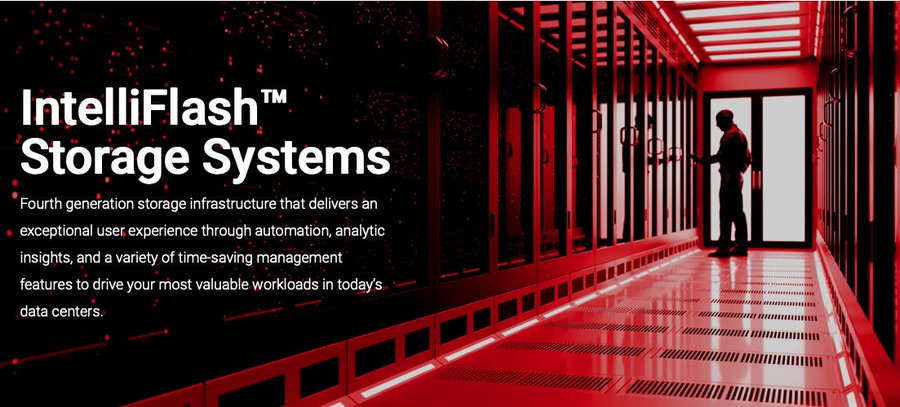
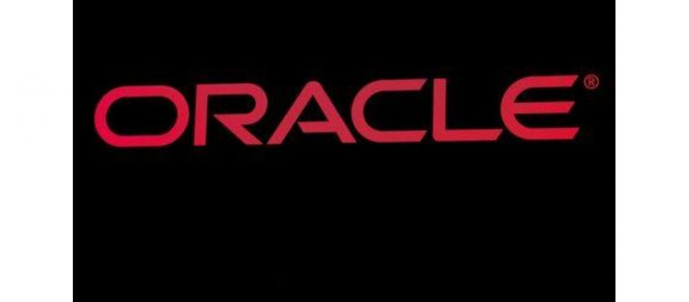
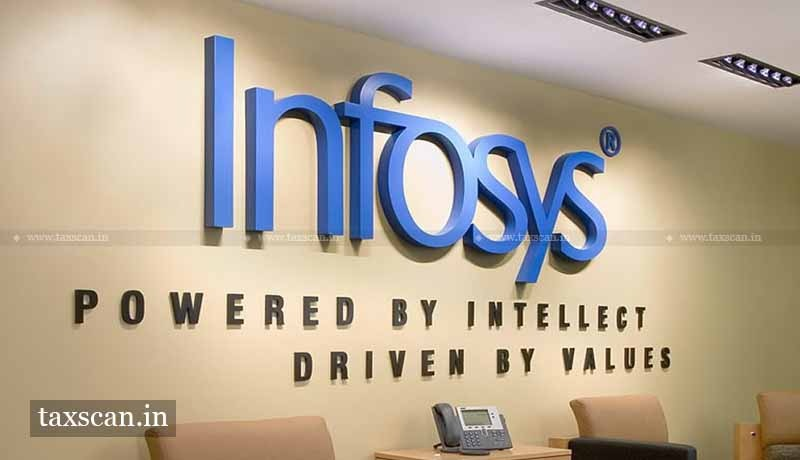
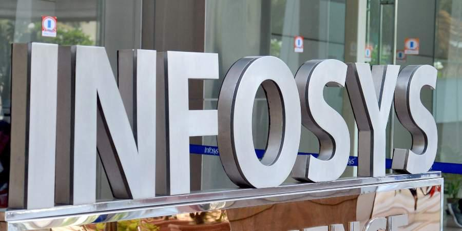

Accented with the latest trends and techniques of the field, having an inborn quantitative aptitude, determined to carve a successful and satisfying career in the IT industry.
Great communication skills with comprehensive understanding and practical knowledge of various Programming Languages with zeal to learn quickly and apply the conceptual knowledge.
Total Experience of 6 years, which includes and not limited to Java Product Developer. Currently associated with Western Digital Corp, Bangalore.
Industry experience in developing scalable, distributed system and SDLC.
Proficient in Java development/debugging with core Spring and Hibernate along with Junit.
Good in Data Structures and Algorithms with fundamental concepts.
Having good experience in RDBMS (MYSQL) along with knowledge on stored Procedure.
Worked on REST Webservices.
Having good knowledge and experience with UNIX OS Scripting and Windows OS.
Experience in working with Agile Methodologies (with experience in working on applications like JIRA, Stash, Git, Crucible).
Good experience on using eclipse, Toad, SQL developer, Tortoise SVN, Jenkins.
Good knowledge on ticketing workflows as worked on various tools like Incident Management in Service-Now, ALM, JIRA.
Good experience in translating business requirements into technology solution.
Experience in Finance and Storage Domain.

IntelliFlash
Organization: Western Digital Corp., Bangalore.(Apr’18 – till-date)
Description: IntelliFlash array portfolio includes all-flash, hybrid, and high-density storage arrays. All IntelliFlash arrays feature dual controllers, redundant hardware, and multipathing support for resiliency and high system availability. All IntelliFlash arrays support SAN and NAS protocols for block and file access to data. You can scale storage capacity by adding Tegile expansion shelves.
This is a major enterprise storage solution hardware from WDC.
Design:
Basic high-level design is based on design patterns like singleton, factory pattern, Java is acting as a management layer on this product. We are using webservices (REST) to expose resources to UI.
Database use are PostgreSQL, Derby etc. Low level design implies we (Java) get status from kernel team through JNI then applies business logic and tether that to UI for user experience.
Role: Senior Java Developer
Contribution: As a team member, responsible for
• Working in middle layer between ZFS team and UI team to Develop modules using Java, Spring, SQL, Unix.
• Features like sync replication helping storage industry to replicate data and snapshots in sync mode.
• Major module taken is LLM (Live LUN Migration) which is first in the market, developed to help customers to do a live data migration from one older storage to Advanced storage without hampering business (zero shutdown).
• Individual Contributor by catering Network related issues in protocols (SAN, NAS) setup (DNS, FTP, SFTP).
• Coordinate with support teams to keep check in different environment on regular basis.
• Integration environment Deployment using Jenkins to generate WAR files.
• Setting up the application in various environments.

Fund Reconciliation
Organization: Oracle Financial Services Software Ltd, Bangalore (Oct’16 – Apr’18)
Description: It is an Asset Reconciliation application of Mitsubishi UFJ Financial Group (MUFG). This application helps the MUFG Bank to match/reconcile the funds between brokers and the other counter party. This application have a UI from which Users are able to reconcile the funds booked on particular day and verify that asset booked are in proper state.
Role: Stack Developer
Contribution: As a team member, responsible for
• Developing modules using Java, Spring, flex, SQL.
• Worked on Quartz scheduler which automatically run Job or reports at a specified time.
• Developed individual modules (Annotation Mgmt., Portfolio collection Mgmt.)
• Automated Test cases using selenium web driver and put results in excel sheet (No user intervention).
• Integration environment Deployment using Jenkins.
• Setting up the application in various environments
• Reports are developed using Jasper Reports
• Resolving and helping the test team in environment related issues

Platform Simplification (May 2015 - Aug 2016):
Infosys Limited.
Description: It is a Reporting application of Deutsche Bank. This application helps the Deutsche Bank to report the trades between itself and the other counter party to the regulatory authorities for various jurisdictions like (Canada, US, Europe).
This application is a real time process which processes the trades booked through the trade booking system and update the trades with trade related information and generate the reports which are then being reported to Regulatory Authorities. The reporting can be real time or EOD (End of Day).
.
Role: Developer
Contribution: As a team member, responsible for
• Debugging modules using Java, Spring, Hibernate, Unix.
• Support to DEV to find the Production issue by raising Incident Mgmt. with RCA.
• Integration environment Deployment
• Setting up the application in various environments
• Support to testing team
• Solving ALM and CR.

Production Support Project (Aug 2014 - April 2015):
Infosys Limited.
Description: It consist of Trade Data Warehousing System application of Deutsche Bank. This TDW is the whole architecture of project on which trades are booked, processed according to business logic and at EOD (end of day) helps the bank to generate the detailed reports which are being sent to the regulators, or the response came from the regulators.
Application Support
Contribution: As a team member, responsible for
• Analysing using Core Java and SQL.
• Executing test cases.
• Handling environment related issues.
• Deployment on different environment
• Support to DEV to find the Production issue.
• Solving ALM and CR.
• Monitoring status of queues for messages using MESH tool.